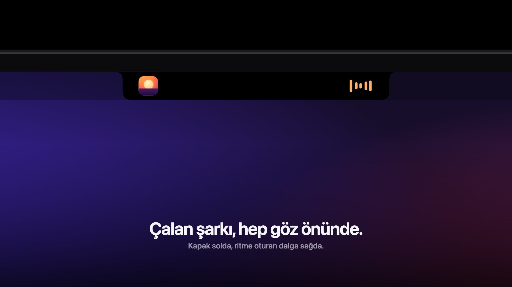
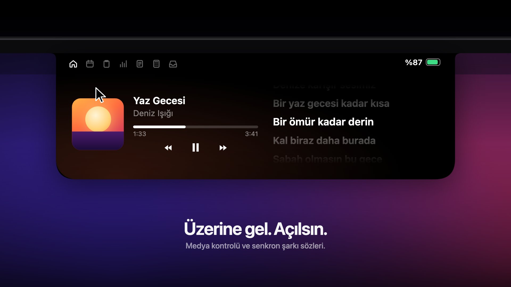

Notchland
Çentiğin yeni hali.
MacBook'unun çentiğini müzik, takvim, pano, sistem durumu ve daha fazlasını barındıran canlı bir panele dönüştür. Fareyi üzerine getir, açılsın.
Göz ucuyla her şey.
Çentik kapalıyken de boş durmaz: iki yanında ihtiyacın olan bilgiyi gösterir, sistem göstergelerinin yerini alır.

-
Canlı müzik etkinliğiSolda kapak, sağda müziğin ritmine oturan ses dalgası. Işık şovu açıkken çentiğin çevresi basla birlikte atar.
-
Ses, parlaklık ve pilSistem HUD'unun yerine çentiğin kulaklarında; düşük pil uyarısıyla birlikte.
-
Kulaklık piliBluetooth kulaklık bağlanınca pil seviyesi; AirPods için sol, sağ ve kutu ayrı ayrı.
-
Bildirimler ve hatırlatmalarEkrana gelen bildirimler ve yaklaşan takvim etkinlikleri çentikte yansır.
Üzerine gel. Açılsın.
Sekmeler arasında tek tıkla ya da klavyeyle gezin. Her sekme Ayarlar'dan açılıp kapatılabilir, sırası değiştirilebilir.

Notlar
Hatırlatıcılar ve Notlar uygulamasındaki “Notchland” klasörüyle eşitlenen hızlı notlar.
Wrapped
Bugün, bu hafta, bu ay ne kadar müzik dinledin; en sevdiğin şarkılar, sanatçılar ve serin. Yalnızca bu Mac'te tutulur.
Raf
Çentiğe sürüklediğin dosyalar için geçici bir raf ve AirDrop'a bırakma alanı.
Türkçe dikte
Kısayolla başlat, konuş; tanıma tamamen cihaz üzerinde. Bitince metin öndeki uygulamaya yapışır.
Klavyeyle gezinme
Kısayolla çentiği aç, sekmeler ve içerikler arasında yön tuşlarıyla dolaş. Fareye hiç dokunma.
Şarkı sözü çevirisi
Senkron sözlerin yanında yabancı şarkıların satır satır Türkçe çevirisi, macOS'un cihaz içi çevirisiyle.
Koci, çentiğinde yaşıyor.
Kocinyo'nun yıldız gözlü kedisi, piksel hâliyle çentiğin altına tutunur ve Mac'inle birlikte yaşar. Çalan bir şey yokken ana sayfada oturup konuşur, tıklayınca tepki verir.
Senin Mac'in, senin verin.
Notchland'in sunucusu yok, hesabı yok, analitiği yok. Her şey yerelde çalışır ve her izin yalnızca ilgili özellik açıldığında istenir.
Ses kaydı
Ses dalgası için yalnızca ritim bilgisi saklanır; sesin kendisi asla kaydedilmez.
Gizli pano öğesi
Şifre yöneticilerinin gizli işaretlediği kopyalar geçmişe hiç girmez.
Yerel
Pano, raf, ritimler ve dinleme geçmişi ~/Library/Application Support/Notchland altında kalır.
Dış servis
Hava için Open-Meteo, sözler için LRCLIB. İkisi de anahtarsız, hesapsız.
| İzin | Ne için |
|---|---|
| Erişilebilirlik | Ses/parlaklık tuşlarını yakalamak, bildirimleri yansıtmak, dikteyi otomatik yapıştırmak |
| Takvim, Hatırlatıcılar | Takvim sekmesi ve etkinlik hatırlatmaları, Notlar sekmesindeki hatırlatıcılar |
| Otomasyon (Notlar) | Hızlı notları Notlar uygulamasıyla eşitlemek |
| Mikrofon, Konuşma Tanıma | Dikte |
| Sistem sesi kaydı | Ses dalgasını müziğin ritmine oturtmak (ses kaydedilmez) |
| Konum | Bulunduğun yerin hava durumu (verilmezse saat dilimindeki şehir) |
| Bluetooth | Kulaklık pil seviyesi |
Üç komutla hazır.
Kaynaktan derle, /Applications'a kur ve başlat. Menü çubuğundaki simgeden Ayarlar'a ulaşabilirsin.
- Depoyu klonlaSwift Package olarak gelir, Xcode projesi gerekmez.
- İmzalama kimliğini oluşturBir kez yeterli. Verdiğin izinler sonraki derlemelerde korunur.
- Derle ve kurUygulama
/Applications/Notchland.appolarak kurulur ve açılır.
$ git clone https://github.com/semihdagdelens/notchland.git $ cd notchland # Bir kez: yerel kod imzalama kimliği $ ./scripts/setup-signing.sh # Derle, kur ve başlat $ ./scripts/install.sh
Birlikte geliştirelim.
Notchland açık kaynak. Hata bildir, özellik öner ya da doğrudan bir pull request gönder.